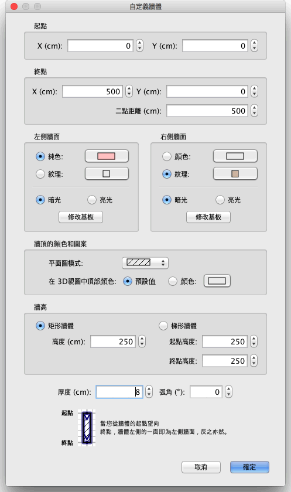

| 自訂牆體 | |||
如果您要自訂家居模型中牆體的位置和長度，您既可以用滑鼠直接在平面圖中操作，也可以使用平面圖→自訂牆體... 功能表項目。 如果平面圖中只有一堵牆體被選中的話，拖曳被選牆體兩端的標示符可以更改牆體起點和終點的位置。
|

|
當滑鼠指標位於選中牆體的起點或終點上時，其形狀會發生變化，指示您可以拖曳滑鼠移動該點。當滑鼠按鈕處於按下狀態時，滑鼠指標的旁邊會顯示出標明牆體長度的工具提示。 自訂牆體的另一種途徑是使用“自訂牆體”對話方塊，方法是在平面圖中按兩下您想要更改的牆體，或者在選中要更改的牆體後使用平面圖→自訂牆體... 功能表項目。  在該對話方塊中，您可以更改牆體起點和終點的座標位置、牆體左右兩側的紋理或顏色，以及其厚度、高度、弧形及圓形的牆，其牆的顏色及光澤。您還可以增加或刪除牆底的踢腳板，通過點擊修改底板按鈕。 在牆上窗格中，您可以更改它的開始和結束點、 顏色、 紋理和其左側和右側，用於填補計畫中的圖案，用於繪製 3D 視圖、 它的厚度，其高度和其弧多大程度上其頂部，如果它是一個圓形的牆的顏色光澤的座標。你可能還添加 (或刪除) 踢腳板底部的每一方通過點擊修改主機板按鈕。 |
|